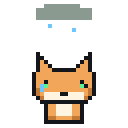

Месяц 1 · Урок 4 · Центр Памятьвиля
Хранение и картинка: диски, видеокарта, порты
Где файлы живут годами, как из чисел получается картинка на экране и что втыкать в какую дырку.
Мем недели
Почему так происходит и почему USB-C эту проблему решил, расскажем в конце.

Диски: память, которая не забывает
На прошлом уроке мы узнали, что оперативная память всё забывает при выключении. Значит, нужно место, где файлы будут лежать годами: система, игры, фотографии. Это накопитель, или просто диск. Сейчас есть два главных вида: HDD и SSD.
HDD: жёсткий диск
HDD (Hard Disk Drive) похож на маленький проигрыватель пластинок. Внутри крутятся гладкие металлические блины со скоростью 5400 или 7200 оборотов в минуту. Над ними на расстоянии тоньше волоса летает головка и намагничивает крошечные участки: намагничено в одну сторону значит 1, в другую значит 0.
Чтобы прочитать файл, головке нужно доехать до нужного места, а блину повернуться. Это долго по меркам компьютера. Зато HDD дешёвый: за те же деньги он вмещает в несколько раз больше, чем SSD.
Слабое место: движущиеся части. Если уронить работающий ноутбук с HDD, головка может чиркнуть по блину, и часть файлов пропадёт.
SSD: твердотельный диск
SSD (Solid State Drive) не имеет движущихся частей. Это плата с микросхемами флеш-памяти. Каждая ячейка хранит заряд, как крошечная ловушка для электронов. Заряд держится годами даже без питания.
SSD ничего не ждёт: ни поворота, ни головки. Поэтому Windows с SSD загружается за секунды, а не за минуту. Он бесшумный, лёгкий и не боится тряски. Бывает в корпусе 2,5 дюйма с разъёмом SATA или в виде маленькой планки M.2, которая вставляется прямо в плату. Самые быстрые M.2 работают по протоколу NVMe.
| HDD | SSD SATA | SSD M.2 NVMe | |
|---|---|---|---|
| Внутри | Пластины и головка | Микросхемы | Микросхемы |
| Скорость | около 150 МБ/с | около 550 МБ/с | 3000–7000 МБ/с |
| Шум | Шуршит | Тихо | Тихо |
| Цена за ТБ | Дешевле всех | Средняя | Дороже |
Флешки и карты памяти
Флешка и SD-карта устроены почти как SSD: те же ячейки флеш-памяти, только меньше, проще и медленнее. Поэтому флешку не стоит использовать как единственное место для важных файлов: дешёвые флешки ломаются без предупреждения.
Глубже: почему SSD «изнашивается»
Каждый раз при записи ячейка SSD чуть-чуть портится. Через несколько тысяч перезаписей она перестаёт держать заряд. Звучит страшно, но контроллер SSD равномерно распределяет запись по всем ячейкам. Обычному пользователю хватит на много лет. Производитель пишет ресурс в TBW: сколько терабайт можно записать, например 600 TBW.
Глубже: главное правило хранения файлов
Ломаются все диски. Вопрос не «сломается ли», а «когда». Поэтому важные файлы хранят минимум в двух местах: например, на компьютере и в облаке. Это называется бэкап. Подробнее о нём поговорим в месяце про безопасность.
Как получается картинка
Пиксели
Подойди к монитору очень близко или посмотри на него через лупу. Картинка состоит из крошечных квадратиков, они называются пиксели. Каждый пиксель состоит из трёх ещё более мелких лампочек: красной, зелёной и синей. Это RGB (Red, Green, Blue).
Яркость каждой лампочки задаётся числом от 0 до 255, то есть одним байтом. Красный на полную, остальные выключены: получается красный. Все три на полную: белый. Все выключены: чёрный. Смешивая яркости, получаем около 16 миллионов цветов (256 × 256 × 256).
255, 0, 0 → красный · #FF0000
0, 255, 0 → зелёный · #00FF00
255, 255, 0 → жёлтый · #FFFF00
255, 255, 255 → белый · #FFFFFF
Помнишь HEX с урока 2? Вот где он пригодился: каждый цвет записывают тремя байтами в HEX.
Разрешение и герцы
Разрешение показывает, сколько пикселей на экране. Full HD это 1920 × 1080: 1920 точек в ширину и 1080 в высоту, всего больше двух миллионов. 4K это 3840 × 2160, в четыре раза больше.
Частота обновления показывает, сколько раз в секунду экран рисует новый кадр. Обычные мониторы работают на 60 Гц, игровые на 144 Гц и больше. Чем выше частота, тем плавнее движение мышки и персонажей.
Видеокарта
Чтобы показать кадр, кто-то должен вычислить цвет каждого из двух миллионов пикселей, и сделать это 60 или 144 раза в секунду. Обычный процессор с такой кучей однотипной работы справляется плохо. Поэтому есть видеокарта, у которой свой процессор, GPU.
Разница такая: у CPU несколько очень умных ядер, а у GPU тысячи простых. Представь одного профессора и тысячу школьников. Профессор решит сложную задачу, а тысяча школьников быстрее раскрасит тысячу клеточек.
У видеокарты есть своя память, VRAM. В ней лежат текстуры, модели и готовые кадры. Иногда видеокарта встроена прямо в процессор: такой графики хватает для учёбы и видео, но для тяжёлых игр нужна отдельная.
Глубже: FPS и почему игра «лагает»
FPS (frames per second) показывает, сколько кадров в секунду успевает нарисовать видеокарта. Если монитор 144 Гц, а видеокарта выдаёт 40 FPS, монитор будет показывать одни и те же кадры по несколько раз, и картинка будет дёргаться. Если наоборот, видеокарта рисует 300 FPS на мониторе 60 Гц, лишние кадры просто не покажутся.
Глубже: что такое мёртвый и битый пиксель
Мёртвый пиксель всегда чёрный: он не светится совсем. Застрявший пиксель всегда горит одним цветом, например ярко-красным, потому что одна из трёх лампочек не выключается. Чаще всего это заводской брак матрицы, починить его дома обычно нельзя.
Разъёмы: что куда втыкать
Сзади у системного блока много разных отверстий. Хорошая новость: почти каждый разъём устроен так, что неправильно его не вставить. Если не лезет, не дави, а поверни или поищи другой.
| Разъём | Для чего | Как узнать |
|---|---|---|
| USB-A | Флешки, мыши, клавиатуры | Прямоугольный. Синий внутри значит быстрый USB 3 |
| USB-C | Телефоны, ноутбуки, зарядка | Маленький овальный, любой стороной |
| HDMI | Монитор, телевизор | Широкий, со скошенными углами |
| DisplayPort | Игровые мониторы | Один угол срезан |
| VGA | Старые мониторы | Синий, с винтами и 15 штырьками |
| Ethernet (RJ-45) | Сетевой кабель | С защёлкой, рядом мигают лампочки |
| Аудио 3,5 мм | Наушники (зелёный), микрофон (розовый) | Круглое гнездо |
Внутри корпуса
- SATA: тонкий плоский разъём с буквой Г для HDD и SSD. Рядом второй, пошире, для питания.
- M.2: маленький слот прямо на плате для SSD-планки.
- PCIe x16: длинный слот для видеокарты.
- 24 pin: самый широкий кабель от блока питания к плате.
Важный момент: куда подключать монитор
Если в компьютере есть отдельная видеокарта, монитор подключают к ней, а не к разъёму на материнской плате. Иначе картинку будет рисовать слабая встроенная графика, а дорогая видеокарта будет скучать. Это одна из самых частых ошибок новичков.

Глубже: почему USB-A вставляется с третьего раза
Разъём USB-A работает только одной стороной, а на глаз стороны почти не отличаются. Вероятность угадать с первого раза 50%, но мы ещё и вставляем криво, поэтому кажется, что ошибаемся всегда. USB-C сделали симметричным: контакты продублированы с обеих сторон, и он работает как угодно.
Повтори и сделай ДЗ
Коротко
- HDD: пластины и головка, дешёвый, медленный, боится ударов.
- SSD: микросхемы, быстрый, тихий. Самые быстрые M.2 NVMe.
- Пиксель это три лампочки RGB, яркость каждой от 0 до 255.
- Разрешение: сколько пикселей. Герцы: сколько кадров в секунду.
- GPU: тысячи простых ядер, своя память VRAM.
- Монитор подключают к видеокарте, а не к плате.
Сыграй ещё раз в игры выше: задания каждый раз новые. Потом заполни домашнее задание. Делай его сам, без подсказок: так ты заработаешь XP честно.
Большой тест месяца
Учитель скажет, когда открыть тест. Он по всем урокам месяца, 20 вопросов.